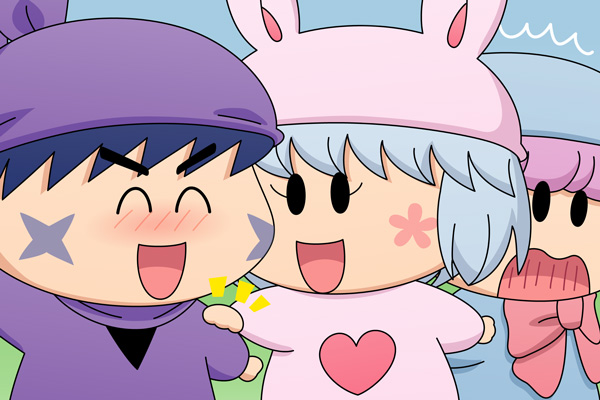

|
ムルモ＆サスケ＆パピィ(1)

ムルモ「とにかく主役はボクに決まっているでしゅ！」
パピィ「何言ってんのよ！主役はあたちに決まっているでちょ！！
・・・もう、みんなの意見がバラバラで一つに決まらないわ・・」
サスケ「それならお話をミックスさせるのはどうかだぜ？
そうすればみんなが主役になれるんだぜ」
ムルモ「そんなことできるわ・・」
パピィ「あら！その案はなかなかいいわね！！
サスケたんのこと見直したわ」
サスケ「お、オイラのことが・・・！
てへへだぜ・・照れるんだぜ・・」
パピィ「じゃああたちたちで早速お話を考えまちょ！」
サスケ「おうだぜ〜！」
ムルモ「ほえぇっ、何でしゅかこの不愉快な展開は！」
投票のコメントにも出てきましたサスケに、ムルモのライバルを演じていただきました〜。いろいろな反対意見をもらいそうですが、あくまでフィクションで・・(^◇^;)。
１４０話「デビル忍者見参ダゼ！」で見られたように、たまにすごい提案を持ちかけるサスケ。パピィの中ではサスケはお馬鹿扱いですが、この勇気ある提案を聞いたらその扱いもちょっとは変わるかもしれない！？(2010/6/12) |